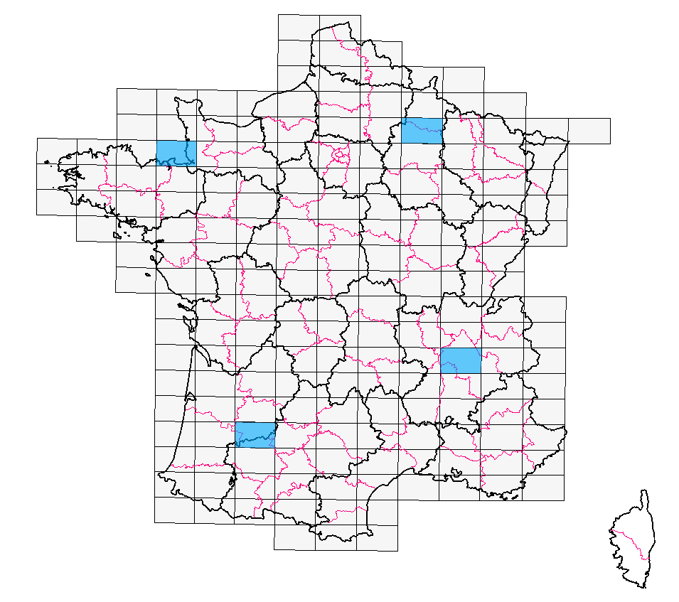
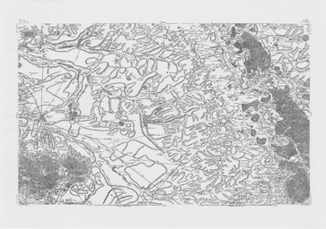
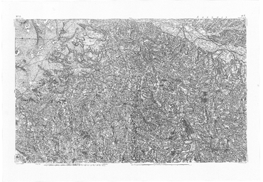
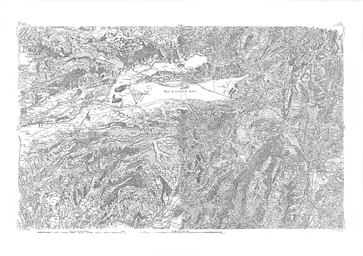
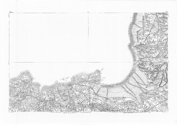

Quatre zones ont été retenues, destinées à être vectorisées manuellement afin d'établir et de tester les différents algorithmes (reconnaissance de symboles, simulations etc.).

Reims : carte de Cassini.
Quart Sud-Ouest de la feuille 79.

Agen : carte de Cassini
Quart Sud-Est de la feuille 73.

Grenoble : carte de Cassini
Quart Sud-Est de la feuille 119.

Saint-Malo : carte de Cassini.
Quart Sud-Est de la feuille127.
